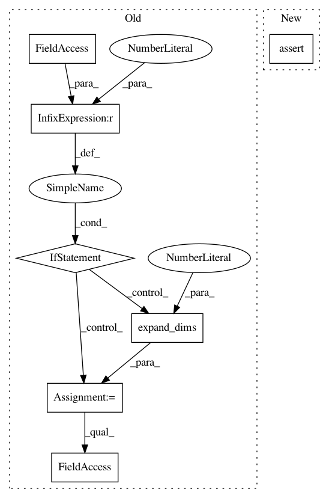

37d6a53cad2695ee387cfa6ffd0e88f96e8ff699,geomstats/special_orthogonal_group.py,,closest_rotation_matrix,#Any#,8
Before Change
:param mat: 3x3 matrix
:returns rot_mat: 3x3 rotation matrix.
if mat.ndim == 2:
mat = np.expand_dims(mat, axis=0)
assert mat.ndim == 3
n_mats, _, _ = mat.shape
assert mat.shape == (n_mats,) + (3,) * 2
mat_unitary_u, diag_s, mat_unitary_v = np.linalg.svd(mat)
rot_mat = np.matmul(mat_unitary_u, mat_unitary_v)
After Change
mat = vectorization_utils.expand_dims(mat, to_dim=3)
_, mat_dim_1, mat_dim_2 = mat.shape
assert mat_dim_1 == mat_dim_2 == 3
mat_unitary_u, diag_s, mat_unitary_v = np.linalg.svd(mat)
rot_mat = np.matmul(mat_unitary_u, mat_unitary_v)
In pattern: SUPERPATTERN
Frequency: 3
Non-data size: 7
Instances
Project Name: geomstats/geomstats
Commit Name: 37d6a53cad2695ee387cfa6ffd0e88f96e8ff699
Time: 2018-03-16
Author: ninamio78@gmail.com
File Name: geomstats/special_orthogonal_group.py
Class Name:
Method Name: closest_rotation_matrix
Project Name: geomstats/geomstats
Commit Name: 37d6a53cad2695ee387cfa6ffd0e88f96e8ff699
Time: 2018-03-16
Author: ninamio78@gmail.com
File Name: geomstats/special_orthogonal_group.py
Class Name:
Method Name: vector_from_skew_matrix
Project Name: geomstats/geomstats
Commit Name: 37d6a53cad2695ee387cfa6ffd0e88f96e8ff699
Time: 2018-03-16
Author: ninamio78@gmail.com
File Name: geomstats/special_orthogonal_group.py
Class Name: SpecialOrthogonalGroup
Method Name: rotation_vector_from_matrix